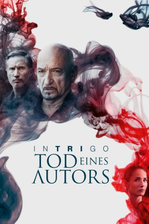

#10885 Intrigo - Tod eines Autors
 
 IMDB-Wertung: 6.0 / 10
IMDB-Wertung: 6.0 / 10  Metascore: 0
Metascore: 0 
Der Autor Germund Rein hat sich selbst ermordet, bevor sein letztes Manuskript veröffentlicht wurde. Sein letztes Lebenszeichen ist ein Brief, in dem er darum bittet, das Buch nicht auf Schwedisch und nicht in seinem Heimatland zu veröffentlichen. Für die Übersetzung wird David engagiert, der bereits zuvor Werke von Rein übersetzt hatte.
Jahr: 2018
Dauer: 106 Minuten
FSK:
Land: Schweden Studio: 20th Century Fox Home EntertainmentTonspuren:
Untertitel:
Auflösung: 1080p (1912x800) Größe: 4618 MB
Genre: Thriller, Drama, Krimi, Mystery
Regisseur: Daniel Alfredson
Drehbuch: Daniel Alfredson, Birgitta Bongenhielm, Håkan Nesser
Soundtrack: Anders Niska, Klas Wahl
Darsteller:
 Ben Kingsley als Henderson
Ben Kingsley als Henderson Tuva Novotny als Eva
Tuva Novotny als Eva Michael Byrne als Keller
Michael Byrne als Keller Veronica Ferres als Kerr
Veronica Ferres als Kerr Benno Fürmann als David
Benno Fürmann als David Elizabeth Counsell als Fraue Bloeme
Elizabeth Counsell als Fraue Bloeme Daniela Lavender als Mariam
Daniela Lavender als Mariam- Jason Riddington als Otto Gerlach
- Gordan Kicic als Journalist
- David Lowe als Edgar L
- Christopher Crema als Ansgar
- Annamaria Serda als Agent
- Greg Lockett als Reporter #2
- Tor Clark als Doris
- Angus Kennedy als Chief Inspector Mort
- Ivona Kustudic als Police Woman
- Erik Johansson als Mauritz
- Sandra Dickinson als Madame H
- Ed Cooper Clarke als Thomas Neumann-Hansen
- Sian Webber als Judge
- Mladen Sovilj als Young Man
- Petar Cirica als Newspaper Salesman
Datei: X:\2018(G-M)\Intrigo - Tod eines Autors (2018, FSK, 1912x800).mkv seit 03.04.2019
Festplatte: HD 2018(G-Z)-2019(A-Z)
 Es gibt insgesamt 138 Filme in der Gruppe '2018(G-M)'
Es gibt insgesamt 138 Filme in der Gruppe '2018(G-M)'